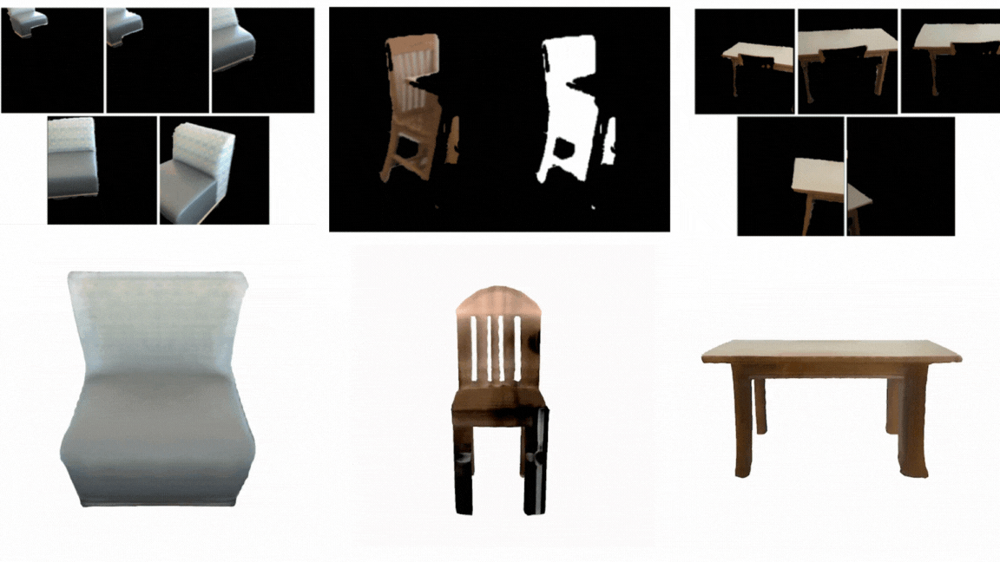
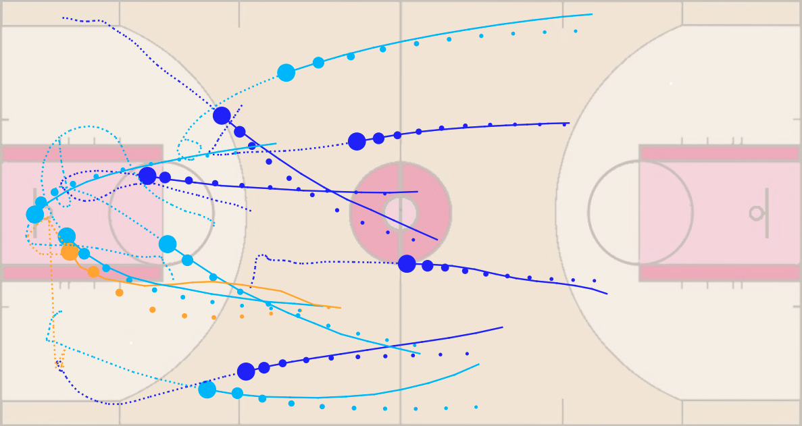
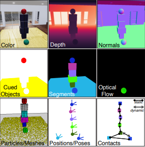
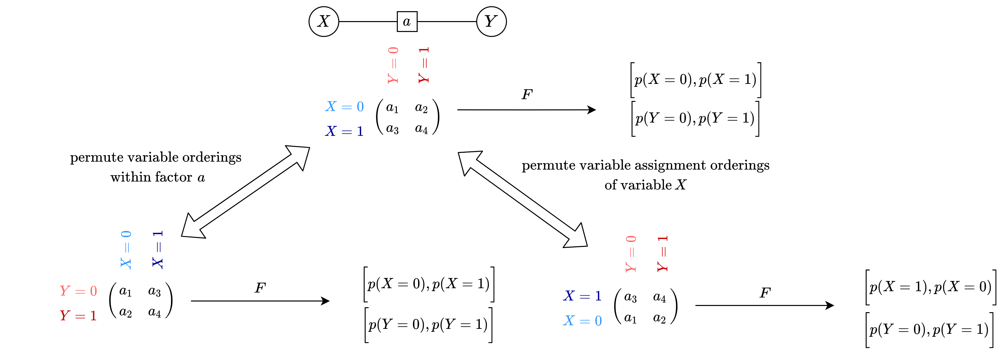
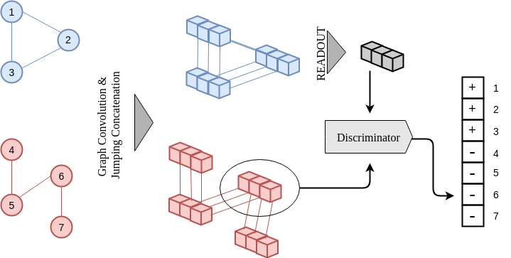
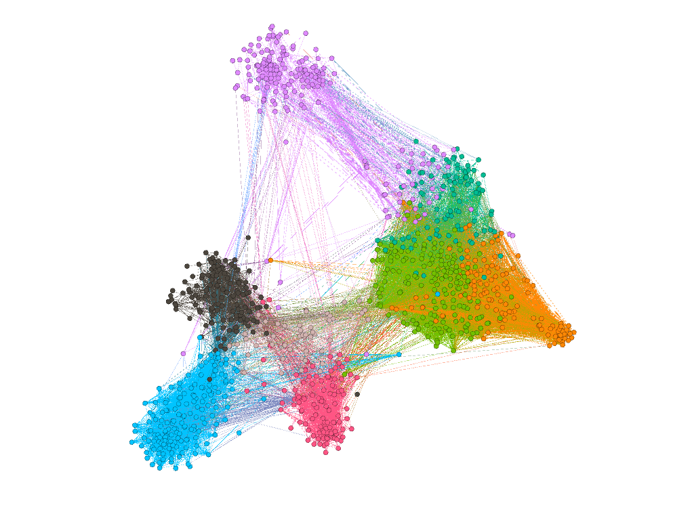
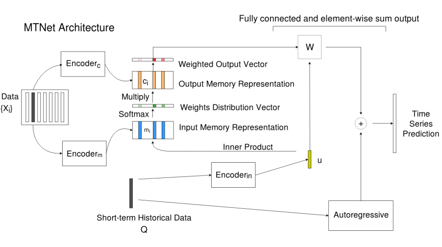
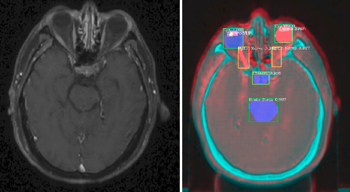
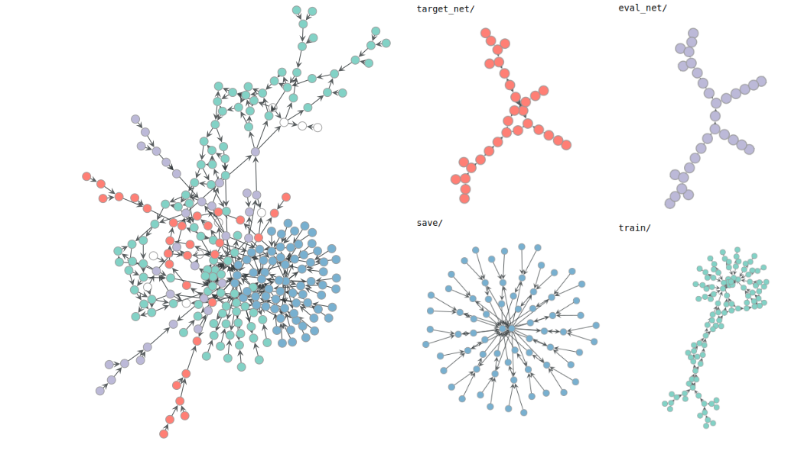

Biography
My friends and colleagues know me as Sun, but I publish under my full name Fan-Yun Sun. I am interested in
- generating 3D environments and simulations to train RL agents,
- generative design for interior scenes.
I write occasionally here. Feel free to reach out to me at fanyun [at] stanford.edu!
CS Ph.D. student @ Stanford
Selected Publications
FactorSim: Generative Simulation via Factorized Representation
We propose a generative simulation framework and introduce a new benchmark to demonstrate its efficacy. we show that, using only text input, we are able to zero-shot solve more than half of the environments in a RL benchmark.
Holodeck: Language Guided Generation of 3D Embodied AI Environments
we present Holodeck, a system that generates 3D environments to match a user-supplied prompt fully automatedly. Holodeck can generate diverse scenes, e.g., arcades, spas, and museums, adjust the designs for styles, and can capture the semantics of complex queries such as ``office of a professor who is a fan of Star Wars'' (demo video to the left). We use LLM-sampled spatial relations between objects and then optimize the layout to satisfy those relational constraints.
* Equal Technical Contribution.
CVPR 2024

Partial-View Object View Synthesis via Filtering Inversion
We propose a framework that combines the strengths of generative modeling and network finetun-ing to generate photorealistic 3D renderings of real-world objects
from sparse and sequential RGB inputs.
Workshop XRNeRF, CVPR 2023
Vancouver, Canada
3DV 2024
(Spotlight)
Davos, Switzerland

Interaction Modeling with Multiplex Attention
We present a forward prediction model that uses a multiplex latent graph to represent multiple independent types of interactions and attention to account for relations of different strengths and a progressive training strategy for the proposed model.
NeurIPS 2022
New Orleans, LA

Physion: Evaluating Physical Prediction from Vision in Humans and Machines
We presented a visual and physical prediction benchmark that measures ML algorithms' capabilities of predicting real world physics demonstrated how our benchmark can identify areas for improvement in physical understanding.
NeurIPS 2021, Datasets and Benchmarks Track

Equivariant Neural Network for Factor Graphs
We identify isomorphism in factor graphs and introduce two neural network-based inference models that takes advantages of such inductive biases.

InfoGraph: Unsupervised and Semi-supervised Graph-Level Representation Learning via Mutual Information Maximization
We propose to learn the representations of whole graphs in unsupervised and semi-supervised scenarios using mutual information maximization.
ICLR 2020
(Spotlight)
Addis Ababa, Ethiopia

vGraph: A Generative Model for Joint Community Detection and Node Representation Learning
In current literature, community detection and node representation learning are usually independently studied while they are actually highly correlated. We propose a probabilistic generative model called vGraph to learn community membership and node representation collaboratively. We also show that the framework of vGraph is quite flexible and can be easily extended to detect hierarchical communities.
NeurIPS, 2019
Vancouver, BC
Designing Non-greedy Agents and a Regulation Enforcement Solution for Multi-Agent Reinforcement Learning
In these two papers, we first introduce a method to train non-greedy RL agents with reward shaping1. Subsequently, we proposed a framework to enforce non-compliant agents to comply in a multi-agent, decentralized setting, utilizing game-theoretic analysis to justify our method2.
1AAAI/ACM conference on AI, Ethics, Society 2018
(Oral)
New Orleans
2AAMAS, 2019
Montreal, QC

A Memory-Network Based Solution for Multivariate Time-Series Forecasting
Inspired by Memory Network for solving the question-answering tasks, we proposed a deep learning based model named Memory Time-series network (MTNet) for time series forecasting. Additionally, the attention mechanism designed enable MTNet to be interpretable.

Organ At Risk Segmentation with Multiple Modality
In this paper, we propose to use Generative Adversarial Network to synthesize MR images from CT instead of aligning two modalities. The synthesized MR can then be jointly trained with CT to achieve better performance.

Neural Network as Neural Network Input
In this technical report, we extended the realm of graph benchmark dataset to computation graphs of neural networks. We web scraped tensorflow model files using github API and annotated them with associated meta data, and we benchmarked them using existing graph classification methods.